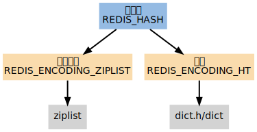
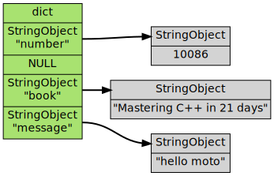

哈希表
REDIS_HASH 哈希表 是 HSET HLEN 等命令的操作对象， 它使用 REDIS_ENCODING_ZIPLIST 和 REDIS_ENCODING_HT 两种编码方式：

字典
当哈希表使用字典编码时， 程序将哈希表的键 key 保存为字典的键， 将哈希表的值 value 保存为字典的值。哈希表所使用的字典的键和值都是 字符串对象 。下图展示了一个包含三个键值对的哈希表：

压缩列表
当使用 REDIS_ENCODING_ZIPLIST 编码哈希表时， 程序通过将 键 和 值 一同 推入 压缩列表 ， 从而形成保存哈希表所需的键-值对结构：
+---------+------+------+------+------+------+------+------+------+---------+ | ZIPLIST | | | | | | | | | ZIPLIST | | ENTRY | key1 | val1 | key2 | val2 | ... | ... | keyN | valN | ENTRY | | HEAD | | | | | | | | | END | +---------+------+------+------+------+------+------+------+------+---------+
- 新添加的 key-value 对会被添加到压缩列表的 表尾
- 当进行查找/删除或更新操作时，先定位到 键的位置 ，然后再通过对键的位置来定位 值的位置
编码
创建空白哈希表时， 程序默认使用 REDIS_ENCODING_ZIPLIST 编码， 当以下任何一个条件被满足时， 程序将编码从 REDIS_ENCODING_ZIPLIST 切换为 REDIS_ENCODING_HT ：
- 某个键或某个值的长度 大于 server.hash_max_ziplist_value （默认值为 64 ）
- 压缩列表中的 节点数量 大于 server.hash_max_ziplist_entries （默认值为 512 ）
命令
哈希类型命令的实现全都是对字典和压缩列表操作函数的包装， 以及几个在两种编码之间进行转换的函数， 没有特别要讲解的地方